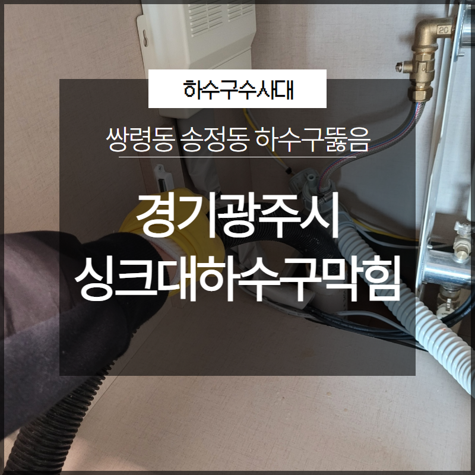
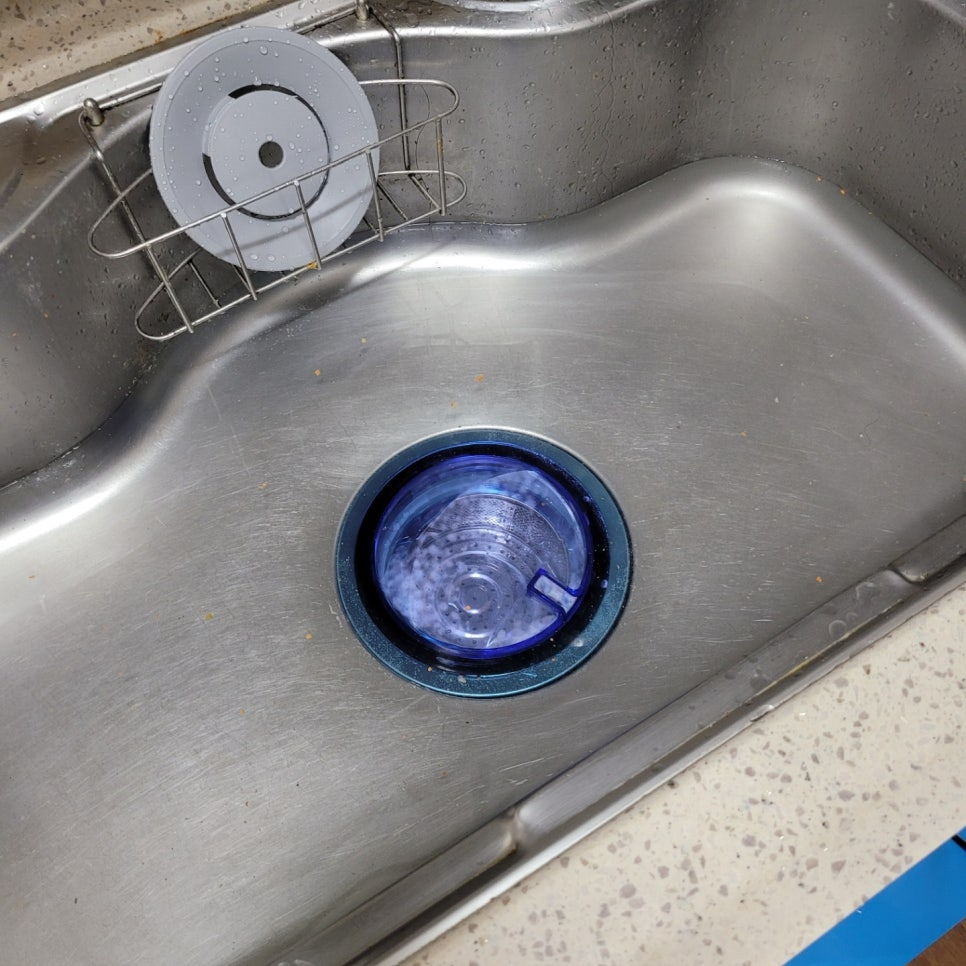
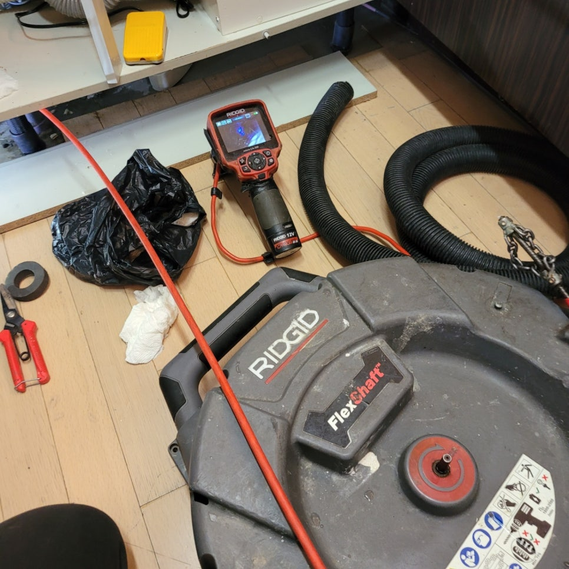
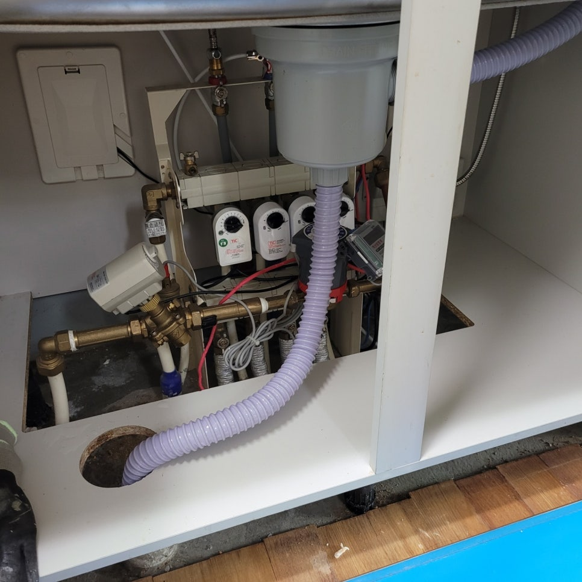
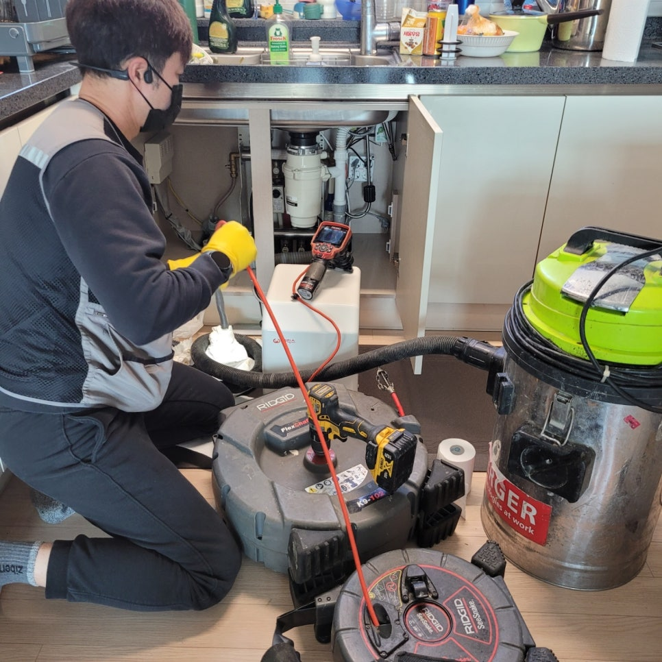
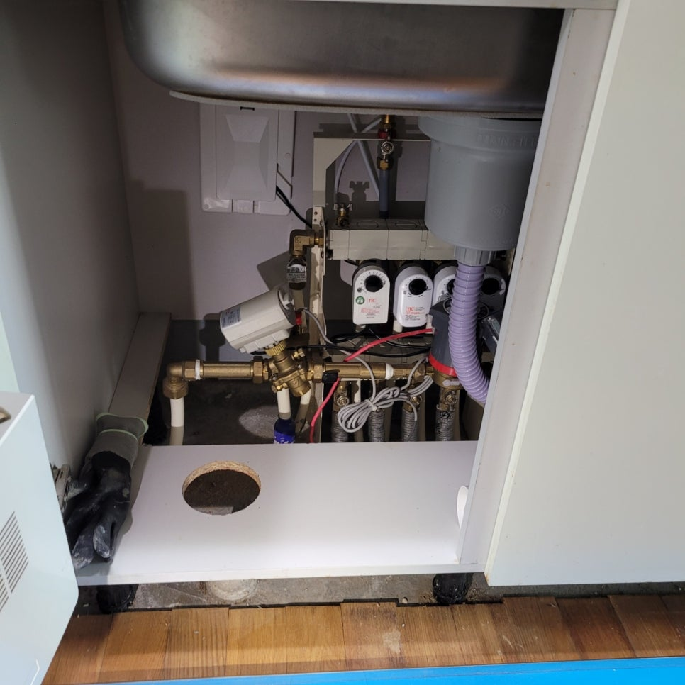
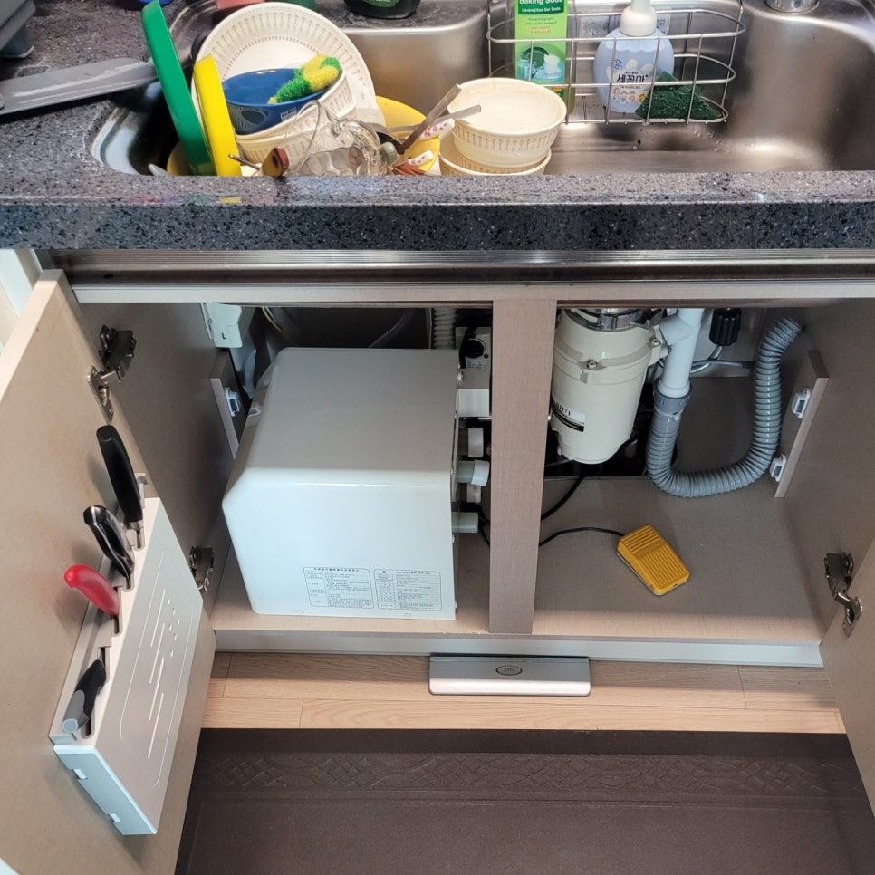

🏠 경기광주시 싱크대하수구막힘 쌍령동 송정동 하수구뚫음 시원하게 해결
광주 쌍령동 싱크대막힘 전문 시공 후기

📋 작업 개요
- 위치: 광주 쌍령동, 쌍령동, 광주
- 서비스 유형: 싱크대막힘, 하수구막힘, 배관막힘, 뚫는업체, 설비공사
- 작업 일시: 2023. 5. 21. 12:55
- 업체명: 하수구수사대 (010-5615-2118)
🔍 문제 상황
안녕하세요. 하수구수사대입니다.
이번 시간은 경기광주시 싱크대하수구막힘 쌍령동 송정동 하수구뚫음 관련된 내용 살펴보도록 하겠습니다. 일상생활을 하다 보면 싱크대가 막히는 현상이 생기게 됩니다. 만약 이러한 막힘 현상이 발생하게 된다면 혼자 해결하려고 하는 것보다는 전문적인 업체에 의뢰하는 것이 가장 좋은 방법일 것입니다.
싱크대 막힘의 경우에는
일반적으로 기름 등으로 인해 막히는 경우가 많은 편이라고 말씀드릴 수 있습니다. 기름을 그냥 싱크대 구멍으로 흘려 내려 버린다면 이러한 것이 누적되어 물이 내려가는 속도가 느려지면서 결국에는 악취가 발생하게 되는 것입니다.

🔎 원인 분석
💡 전문가 진단: 싱크대 막힘의 경우에는
이런 과정을 그냥 방치하게 된다면 결국에는 막히는 현상이 생기게 되는 것입니다. 최악의 경우에는 배관 공사를 통해 뚫어내야 하는 일까지 생기는 것입니다. 이번 방문 드린 경기광주시 싱크대하수구막힘 쌍령동 송정동 하수구뚫음 고객님의 집에서도 배관 등에 많은 이물질이 붙어 있었습니다.
이러한 부분은 저희 하수구수사대에서는 내시경 카메라로 확인한 후 작업 방향을 설정하게 됩니다. 하수구가 막혔을 때 이러한 내시경 카메라의 사용은 필수적이라고 볼 수 있습니다. 의뢰를 주신 고객님 댁에서는 특별한 것은 발견하지 못했습니다.
물이 새는 등의 일은 없는 것으로 보였습니다. 하지만 혹시나 모를 일에 대비해 내시경을 통해 계속해서 배관을 관찰하였습니다. 관찰한 결과 많은 기름 찌꺼기가 있는 것을 파악하였습니다. 의뢰를 주신 고객님에게는 작업해서 끼어 있는 이물질을 제거해야 한다고 말씀드렸습니다.
그리고 슬러지가 많은 것을 파악하였습니다. 고객님께서는 싱크대를 사용할 때 음식물 찌꺼기와 기름을 같이 내려보낸다고 하셨습니다. 아무래도 이러한 것 때문에 누적이 되어 더욱 큰 덩어리로 변한 것으로 파악되었습니다.
현재 상황을 해결하기 위해서 배관 스케일링 작업을 하기로 하였습니다.

🔧 작업 과정
깔끔하게 하는 것이 첫 번째 목표였습니다. 꺾이는 지점인 엘보 구간에서는 다양한 오염물질들이 벽면에 붙어 있는 것이 확인되었습니다. 해당 물질을 잘게 부수면서 벽면에 붙은 이물질을 덜어내는 작업을 추가로 하였습니다.
우선 배관 스케일링을 진행할 수 있는 전문 장비인 플렉스 샤프기를 활용했습니다. 내부에 있는 슬러지들을 깔끔하게 제거하는 작업을 진행하게 되었습니다. 이후 내시경 카메라로 수시로 작업 진행 상황을 관찰하였습니다.
싱크대만 보더라도 배수구와 거름망, 그리고 배수통과 주름 호스 등으로 거쳐 물과 이물질이 배출될 수 있도록 설계되었습니다. 만약 이러한 설계 구조물 중 하나라도 문제가 생기게 된다면 제대로 작동하지 않게 되는 것입니다.
이번에 요청을 해주신 고객님의 경우에는 다행히도 샤프트키를 활용해 이러한 막힘 현상을 원만하게 해결할 수 있었습니다. 그러나 상황이 심각할 경우에는 배관 공사 등을 통해 뚫어야 하는 일이 발생할 수도 있습니다.
배관 공사를 하게 된다면
오랜 시간이 걸리는 점도 감안해야 할 것입니다. 막힌 부위의 타공 및 장비 삽입, 뚫는 일도 해야 하는 것입니다. 작업을 모두 마무리하고 나서 내시경 카메라로 작업 결과를 확인하고 고객님에게 말씀드렸습니다. 이번 작업도 무사히 마무리할 수 있게 되었습니다.
싱크대 막힘 현상 등이 발생한다면 하수구수사대에 문의 주시길 바랍니다. 지금까지 하수구수사대에서 경기광주시 싱크대하수구막힘 쌍령동 송정동 하수구뚫음 관련 내용 알려드렸습니다.


✅ 작업 완료
하수구, 싱크대가 막히셨다면 당황하지 마시고
언제든지 하수구수사대를 찾아주시길 바랍니다.




⚠️ 주방 싱크대 배관 막힘 예방 수칙
- ✅ 기름기가 묻은 식기나 프라이팬은 설거지 전 키친타올로 반드시 기름때를 닦아내세요.
- ✅ 주기적으로 싱크대 개수대에 뜨거운 물을 가득 받아 한 번에 내려 배관 내부 기름을 씻어내세요.
- ✅ 배수구 거름망을 미세한 필터로 사용하시고 음식물 찌꺼기가 틈으로 새어 들지 않게 관리하세요.
- ✅ 베이킹소다와 식초를 뜨거운 물과 함께 일주일에 한 번씩 부어주면 배관 살균과 막힘 예방에 좋습니다.
💡 핵심 정리
- 확실한 장비 작업(내시경 점검 및 샤프트 스케일링)으로 원인을 뿌리 뽑습니다.
- 작업 후 1년 이내에 동일한 부위 재발 시 100% 무상 A/S 서비스를 보장합니다.
- 서울 · 경기 · 인천 전 지역에 24시간 언제든 긴급 출동할 수 있도록 항시 대기 중입니다.
❓ 자주 묻는 질문 (FAQ)
🚨 광주 쌍령동 싱크대막힘 문제로 고민이신가요?
정확한 원인 진단과 확실한 시공으로 재발 없는 해결을 약속드립니다.
24시간 긴급 출동 | 서울 · 경기 · 인천 전지역 | 1년 내 재발 시 무상 A/S